Cannes Docs 2025
I Heard the Calling: The Return of the Tupinambá Cloak
A documentary about restitution, memory, territory and cultural reparation, following Célia Tupinambá's journey through European museums.
Brazil / France
Director, editor and cinematographer focused on high-impact documentaries rooted in territory, identity and decolonial perspectives. With projects developed across Europe and Latin America, my work moves between intimate storytelling and global circulation, engaging festivals, broadcasters and international co-productions.
Featured project
Cannes Docs 2025
A documentary about restitution, memory, territory and cultural reparation, following Célia Tupinambá's journey through European museums.

The project took part in the Marché du Film in Cannes during its development phase.

Selected for the São Paulo documentary-development lab focused on Afro-Indigenous narratives.

Development laboratory at UFBA's Institute of Humanities, Arts and Sciences in Bahia, Brazil.
Official invitation to participate as a project in development, representing new Latin American voices.

Supported by the Lei Paulo Gustavo programme of the State of Rio de Janeiro, Savana Investimentos and France's Plan Decolonial Fund.

Officially selected for the Brazil Showcase in Cannes Docs' Docs-in-Progress, then awarded three two-hour legal consultations with Anna Lisa Putortì and Diana Rulli.

Invited to the documentary platform connecting and developing Latin American projects.

Selected in the festival's Miradas Indígenas section as a work in final post-production.
Selected for the DOCSUR Pitching Lab at the Miradas Afroindígenas Market in Tenerife.
Visual highlights
2027 · Work in progress
2024 · Short documentary

Short documentary · France / Peru
2019 · Short documentary · France
Short documentary · France

Short documentary · France
2026 · Documentary series

Feature documentary · Brazil / Senegal
Web series · 9 episodes
Direction / Editing / Cinematography

About
Robson Dias is a Brazilian-born filmmaker based in Marseille, working across directing, cinematography and editing at the intersection of documentary, art and political cinema. Trained in Brazil and France, he holds a Bachelor’s degree in Cinema from PUC-Rio and a Master’s in Documentary Directing from Aix-Marseille Université. Over the past decade, he has developed a transnational practice between Latin America and Europe, navigating both independent production and international co-production environments.
His work explores questions of territory, memory, power and representation, often engaging with decolonial perspectives and the politics of the gaze. His short film Pra Inglês Ver was awarded at the Gramado Film Festival, and he later co-wrote and edited the feature documentary KABADIO, while also directing second unit for the series Surfing West Africa (Canal OFF). Since relocating to Europe, he has collaborated across France, Germany and Italy, and founded Búzios Films, an independent production structure focused on culturally sensitive narratives.
In 2024, his short documentary Favela Turística — a critical reflection on the contradictions of favela tourism — was selected for the Warner Bros. Discovery Access Program and released on the MAX platform, later broadcast across Latin America. His current feature documentary, I Heard the Calling: The Return of the Tupinambá Cloak, follows the political and spiritual struggle for the restitution of sacred Tupinambá artifacts held in European institutions. The project was presented at Cannes Docs and received the Docs-in-Progress Award, consolidating its international positioning.
Alongside his filmmaking practice, Dias is actively engaged as a speaker, mentor and educator. He has participated in major industry platforms such as Rio2C and international markets, and teaches documentary methodologies and cinematic practice at institutions including École Kourtrajmé in Marseille. His work moves fluidly between artistic creation and critical discourse, positioning cinema as both a narrative form and a political tool.
Fluent across multiple cultural and professional contexts, Robson Dias develops projects that challenge dominant narratives, foreground marginalized voices and propose new forms of cinematic language. His films are not only works of storytelling, but gestures of resistance, negotiation and reappropriation of history.
Selected recognitions
Festival de Cannes2025
Rulli Putortì & Partners Law Firm Award, presented at Cannes Docs' Doc Day.

Warner Bros. Discovery2024
Favela Turística was selected, released on MAX and broadcast across Latin America.
Cannes Docs2025
Officially selected for the Brazil Showcase at Cannes Docs in 2025, connecting the project to an international industry audience.
Berlinale2024
Participation in one of the central meeting points of international cinema.
MiradasDoc / Spain2025
Recognition for I Heard the Calling, opening a new international laboratory.
Tenerife / Spain2025
Selected for the Miradas Afroindígenas Market pitching laboratory.
Just premiered / Research
Robson Dias participated as a researcher in this three-part VPRO series with journalist Nina Jurna, exploring the tensions, beauty and contradictions of Rio de Janeiro.
The series follows Jurna across the city, from favelas to affluent neighbourhoods, at a moment when questions of inequality, security and political division shape everyday life.
Now availableSince 6 September 2026
WatchNPO 2 / VPRO / NPO Start
FormatThree-part documentary series
Talks / Teaching / Mentoring

Alongside filmmaking, Robson Dias works as a speaker, teacher and mentor across industry platforms, training spaces and cultural programs. His practice connects cinema, representation, authorship and access through talks, masterclasses, professional panels and hands-on workshops.
Open full pageStart a conversation
Bring a film, a commission, a workshop or a question. The right collaboration can begin with one clear message.